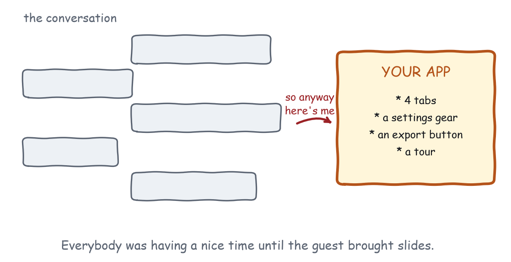

Chapter 1
Don't Make Me Leave the Chat
The first law, the three questions that enforce it, and the same task built three ways.
Here is the first law, and if you only remember one thing from this book, make it this one:
That is most of the book. Everything else is footnotes, examples, and me talking you out of the dashboard you are already planning.
Your app is a guest
An MCP App does not open in a tab. It does not get a URL. Nobody typed your name into anything. Your app appears in the middle of a conversation that was going fine without you, because a model decided your tool was useful for the next thirty seconds of somebody’s task. That makes you a guest. A welcome one, hopefully, but a guest, and guests have exactly one job: help with the thing that is happening, then get out of the way. Guests do not rearrange the furniture, demand everyone’s attention, or announce that actually, the real party is at their house.
You would be amazed how many widgets announce that the real party is at their house.

The comparison to a web page is worth making precise, because it is where most of the bad instincts come from. A web page is a destination, and somebody navigated to it. They typed a URL, or clicked a link, or opened a bookmark, and in doing so they made a decision: for the next few minutes, this page has my attention. The page can spend that attention. It has a header, a nav bar, a footer, and a cookie banner, and none of those is outrageous, because the user signed up for a place and a place has furniture.
An MCP App is not a place. It is a paragraph that happens to have buttons. It arrives in a stream of other paragraphs, in a column a few hundred pixels wide, underneath a sentence somebody typed and above a sentence somebody is about to type. Nobody signed up for it, nobody can bookmark it, and the user did not choose you. The model did, on their behalf, about two seconds ago, and it will choose somebody else in a minute. Design for the paragraph, not for the place, and most of the rest of this book follows without being told.
Why leaving is so expensive
“Leave the chat” sounds dramatic, and most apps do not literally eject anyone. They do something quieter: they break the flow. In this medium the flow is worth more than it has ever been worth anywhere else, because the conversation is holding three things at once, and a break costs all three.
The first is the context. Everything established so far, which by the time your tool fires is usually quite a lot: the account being discussed, the date range that matters, the option already ruled out, the tone the user has settled into. None of that is written down anywhere the user can point at. It exists as a shared understanding between a person and a model, and the moment your app behaves as though none of it happened, the user has to carry all of it across the gap by hand, in a text box, one fact at a time.
The second is momentum. The user was mid-task and had the next step in their head. Thought is perishable in a way that is easy to underrate when you are the one being interesting: every second your widget spends being impressive instead of useful is a second that next step is evaporating, and when it has evaporated the user does not blame your load time. They lose interest in the task.
The third is new, and Chapter 2 is entirely about it. The model is tracking the task too, and it can only track what reaches it. Send the user off to a tab, a login page, or a maze of controls the model cannot see into, and you have not just interrupted a person. You have blinded the other participant, and the user will discover this three turns later when they ask a follow-up question and get an answer that ignores everything they just did. A web page that wastes your attention costs you attention. A chat app that breaks the flow costs the context, the momentum, and the model, and the user pays to rebuild every one of them.
So the bar is high, which brings us to the uncomfortable part.
An app must earn its render
Text is the incumbent, and the incumbent is good. Text streams instantly, token by token, so the user is reading the answer while it is still being written. Text is quotable, searchable, and screen-readable. The model can refer back to it, and so can the user, six turns later, by scrolling. Text needs no viewport, no theme, no consent prompt, no load time, and no host capability negotiation. It works in every client that has ever spoken this protocol and every client that ever will. Your widget is competing with all of that, and before you ship a render it has to win.
Three questions tell you whether it will. Ask them in order, and be honest, because your users will be.
Does this need to be seen, or just read? A trend needs to be seen. A number needs to be read. “Revenue is up 12% to $4.2M” is a finished answer; a chart that says the same thing is a slower paragraph with a loading state. Shape, comparison, spatial arrangement, a picture of the actual thing: seen. A value, a status, a verdict, a fact: read. The test is not whether a picture would be nice, because a picture is always nice. The test is whether the picture carries something the sentence cannot, and the way to run it is to try writing the caption. If the caption is the answer, ship the caption and keep the afternoon.
Will the user act on it, or just glance at it? If they are going to pick, adjust, approve, or explore, then interactivity is doing real work and the render is probably justified. If they are going to look once and move on, you have shipped controls to somebody who wanted a sentence, and controls are not free: they occupy the space where the answer would have gone. Glances want billboards, not cockpits, and Chapter 3 is entirely about designing for the glance. Watch for the tell in testing, because it is unmissable: a control nobody touches in five sessions is a control that failed this question, and the model-as-user runs in Chapter 11 measure the same thing without recruiting anybody.
Does the conversation already contain the answer? The cruellest failure in this medium is a widget that renders four input fields when the user already said, in words, in this very conversation, what goes in three of them. If the conversation contains it, your app should arrive already knowing it, and arrive showing that it knows. This one is important enough that it gets its own law in Chapter 4.
Score zero out of three and the right widget count is zero, so write the sentence and move on. Score one and think hard about whether the one you scored is really worth a render. Two or three, render, and make it count.
The questions, applied
The three questions look soft until you run them on things you have actually seen, so here they are against six tools that exist in some form on every MCP server being built right now.
| The tool | Seen? | Act? | New? | Verdict |
|---|---|---|---|---|
| “What is our error rate right now” | no | no | yes | A sentence. Ship no widget. |
| “Show me the last 30 days of signups” | yes | no | yes | A chart, and nothing else on the card. |
| “Which of these three candidates should I schedule” | yes | yes | partly | A picker. This is the sweet spot. |
| “File this receipt” | no | yes | no | One confirmation, everything prefilled. |
| “What does the contract say about X” | partly | no | yes | Quoted text beats a viewer. |
| “Rebalance this budget” | yes | yes | no | A canvas. Direct manipulation earns it. |